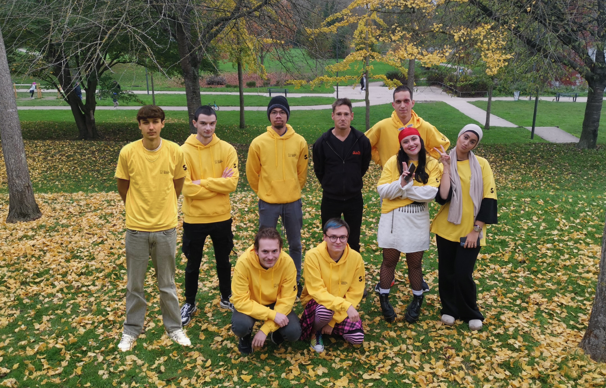

Les volontaires de Solidarité Seniors ont pour mission de lutter contre l'ennui et l'isolement des personnes âgées (qu'elles soient mobiles ou pas). Pour cela on organise des visites de convivialitée ainsi que des sorties collectives afin de briser cette solitude s'installant chez nos séniors
Les connectés
La mission “Les connectés” s’adresse à un public varié : des collègiens jusqu’aux personnes âgées, en passant par des personnes en situation de handicap ou en réinsertion. Notre objectif est de lutter contre l’illectronisme, l’addiction aux écrans, le cyberharcèlement et tout autre danger pouvant être lié aux nouvelles technologies.
Les Boosters

Les boosters font parties des volontaires Solidaritée Séniors, ils ont également pour mission d'accompagner les personnes âgées en situation d'isolement. Ils ont au moins 4 visites par semaines et 4 semaines de cours réparties sur l'année au lycée de l'Acheléen
Les tous dehors

La mission consiste à l'initiation au jeu libre en plein air (selon les conditions météorologiques) pour des structures qui accueillent des enfants et des adolescents de 6 à 15 ans. Nous proposons nos services en binôme ou plus (selon le nombre d'enfants).